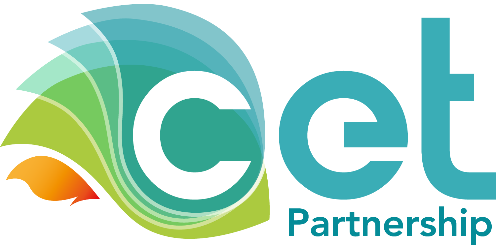

Find details about our research projects.

NU-ACTIS
Navigating Uncertainties: Advanced Control Solutions for Inverter-Dominated Pwoer Systems
2025-2028
NU-ACTIS is an international research project that addresses emerging stability and control challenges in renewable-rich power systems. As power systems become increasingly dominated by inverter-based resources such as wind, solar, battery storage, and HVDC technologies, new forms of dynamic interactions and inverter-driven instabilities can arise. NU-ACTIS investigates these phenomena and develops advanced control, monitoring, and operational solutions that enable the secure and reliable integration of renewable energy. The project combines expertise in power system dynamics, adaptive control, machine learning, and testing methodologies to support the transition towards a resilient and sustainable electricity system
At DTU, our research focuses on the development of AI-enabled approaches for the analysis and control of inverter-dominated power systems. In particular, we investigate machine learning-based control strategies, online system identification methods for adaptive control, and verification techniques that provide transparency, trustworthiness, and performance guarantees for AI-assisted control solutions. These methods are developed and validated in realistic power system simulation environments, contributing to the safe deployment of advanced control technologies in future renewable energy systems.
Our partners: RISE Research Institutes of Sweden (Coordinator), Uppsala University, University College Dublin, Siemens Gamesa, and eRoots